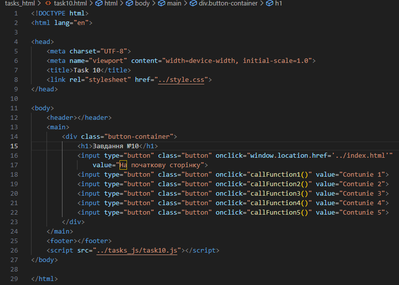
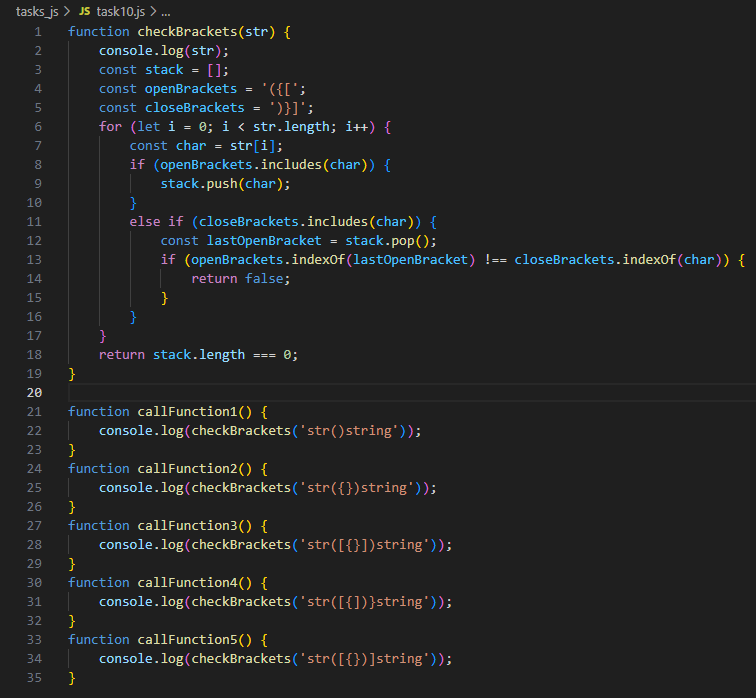
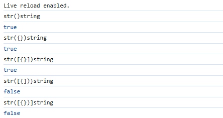

Завдання №6.10
HTML-код (task10.html)
JS-код (task10.js)
Результат виконання
Коментар до JS-коду
Функція checkBrackets(str) перевіряє правильність закриття різних типів дужок у рядку JavaScript коду (круглих (), фігурних {} і квадратних []). Вона використовує стек, щоб відстежувати відкриті дужки. Коли зустрічається відкрита дужка, вона додається в стек. Коли зустрічається закрита дужка, функція перевіряє, чи відповідає вона останній відкритій дужці (якщо це так, то остання відкрита дужка видаляється зі стека). Якщо парна дужка не відповідає або залишаються непарні відкриті дужки, функція повертає false. Якщо всі дужки правильно закриті, функція повертає true.